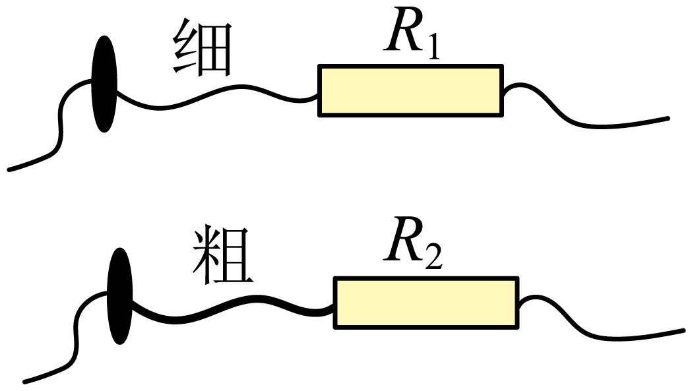
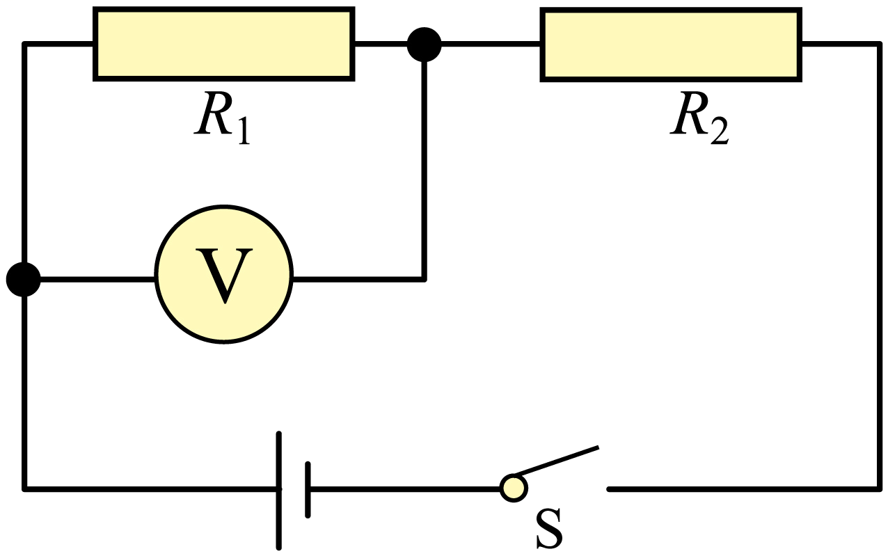

2023年北京市中考物理试题 · 选择题 第11、12、13、14、15题
11. 如图是两个定值电阻R1、R2的内部结构图，R1、R2所用电阻丝（涂有绝缘漆）粗细均匀、材料相同，分别缠绕在相同的圆柱形绝缘棒上，圈数分别为43圈和33圈，R1的电阻丝比R2的电阻丝细。将R1、R2并联在电路中工作一段时间，下列说法正确的是（ ）

A. 通过R1的电流等于通过R2的电流
B. R1两端的电压大于R2两端的电压
C. R1的电功率大于R2的电功率
D. R1消耗的电能小于R2消耗的电能
12. 如图是小强利用器械进行锻炼的示意图，其中横杆AB可绕固定点O在竖直平面内转动，OA∶OB=3∶2，在杆A端用细绳悬挂重为300N的配重，他在B端施加竖直方向的力F1，杆AB在水平位置平衡，此时他对水平地面的压力为F2。为了锻炼不同位置的肌肉力量，他将固定点移动到A端，杆AB可绕端点A在竖直平面内转动，配重悬挂在O点，在B端施加竖直方向的力使杆AB在水平位置再次平衡，此时，他对水平地面的压力为F3，压强为p。已知小强重为650N，两只脚与地面接触的总面积为400cm²，不计杆重与绳重，下列判断正确的是（ ）

A. F1为200NB. F2为1100N
C. F3为830ND. p为11750Pa
13. 下列说法正确的是（ ）
A. 运动的小球具有机械能，而不具有内能
B. 铁块很难被压缩，说明分子间只存在斥力
C. 汽油机的压缩冲程中，活塞压缩气体，将机械能转化为内能
D. 内陆地区比沿海地区昼夜温差大，原因之一是砂石的比热容比水的比热容小
14. 小京洗水果时，发现体积较小 桔子漂浮在水面上，而体积较大的芒果却沉在水底，如图所示。下列说法正确的是（ ）
桔子漂浮在水面上，而体积较大的芒果却沉在水底，如图所示。下列说法正确的是（ ）
A. 桔子的密度小于芒果的密度
B. 桔子受到浮力大于它受到的重力
C. 桔子受到重力小于芒果受到的重力
D. 桔子受到的浮力大于芒果受到的浮力
15. 如图所示，是小京设计的汽车油箱内油量不足时触发报警的电路，电源两端电压保持不变，电阻R1、R2中的一个是定值电阻，另一个是压敏电阻。压敏电阻装在油箱内底部，其阻值随油箱中油量的减少而增大，当电压表示数大于某一值U时，就会触发报警。电压表示数为U时，油箱中的油量为警戒油量。下列说法正确的是（ ）

A. R1为压敏电阻
B. 随着油箱的油量减少，通过定值电阻的电流变大
C. 若换用阻值更大的定值电阻，警戒油量将变小
D. 若换用电压更大的电源，警戒油量将变大